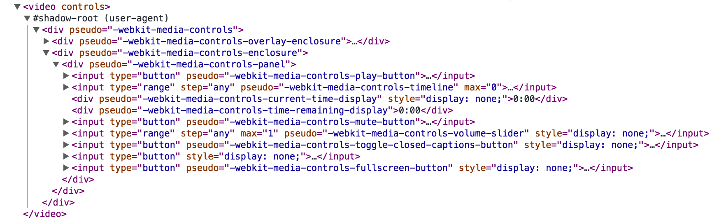

前几天在看YY的讲CardKit的那个slides，在讲前端的组件化和模块化就看到了web components和shadow dom这些东西，于是部分翻译一下这篇文章做个基本了解。
原文是: A Guide to Web Components
啥是web components
简而言之就是可以自定义一个html标签，然后将一堆html和css打包在里面，且包内的元素完全不受包外的影响。
比如上面这个video标签，将chrome develop tool->settings->general->elements->show user agent shadow DOM钩上，然后就可以看见下面这一大坨:

同里我们可以自己来定做一个<img-slider>标签
Templates
首先用一个template来封装所有的html和css:
<template>
<style>
* {
-webkit-box-sizing: border-box;
-moz-box-sizing: border-box;
-ms-box-sizing: border-box;
box-sizing: border-box;
}
#slider {
max-width: 600px;
text-align: center;
margin: 0 auto;
}
#overflow {
width: 100%;
overflow: hidden;
}
#slides .inner {
width: 400%;
}
#slides .inner {
-webkit-transform: translateZ(0);
-moz-transform: translateZ(0);
-o-transform: translateZ(0);
-ms-transform: translateZ(0);
transform: translateZ(0);
-webkit-transition: all 800ms cubic-bezier(0.770, 0.000, 0.175, 1.000);
-moz-transition: all 800ms cubic-bezier(0.770, 0.000, 0.175, 1.000);
-o-transition: all 800ms cubic-bezier(0.770, 0.000, 0.175, 1.000);
-ms-transition: all 800ms cubic-bezier(0.770, 0.000, 0.175, 1.000);
transition: all 800ms cubic-bezier(0.770, 0.000, 0.175, 1.000);
-webkit-transition-timing-function: cubic-bezier(0.770, 0.000, 0.175, 1.000);
-moz-transition-timing-function: cubic-bezier(0.770, 0.000, 0.175, 1.000);
-o-transition-timing-function: cubic-bezier(0.770, 0.000, 0.175, 1.000);
-ms-transition-timing-function: cubic-bezier(0.770, 0.000, 0.175, 1.000);
transition-timing-function: cubic-bezier(0.770, 0.000, 0.175, 1.000);
}
#slides img {
width: 25%;
float: left;
}
#slide1:checked ~ #slides .inner {
margin-left: 0;
}
#slide2:checked ~ #slides .inner {
margin-left: -100%;
}
#slide3:checked ~ #slides .inner {
margin-left: -200%;
}
#slide4:checked ~ #slides .inner {
margin-left: -300%;
}
input[type="radio"] {
display: none;
}
label {
background: #CCC;
display: inline-block;
cursor: pointer;
width: 10px;
height: 10px;
border-radius: 5px;
}
#slide1:checked ~ label[for="slide1"],
#slide2:checked ~ label[for="slide2"],
#slide3:checked ~ label[for="slide3"],
#slide4:checked ~ label[for="slide4"] {
background: #333;
}
</style>
<div id="slider">
<input checked="" type="radio" name="slider" id="slide1" selected="false">
<input type="radio" name="slider" id="slide2" selected="false">
<input type="radio" name="slider" id="slide3" selected="false">
<input type="radio" name="slider" id="slide4" selected="false">
<div id="slides">
<div id="overflow">
<div class="inner">
<img src="https://s3-us-west-2.amazonaws.com/s.cdpn.io/5689/rock.jpg">
<img src="https://s3-us-west-2.amazonaws.com/s.cdpn.io/5689/grooves.jpg">
<img src="https://s3-us-west-2.amazonaws.com/s.cdpn.io/5689/arch.jpg">
<img src="https://s3-us-west-2.amazonaws.com/s.cdpn.io/5689/sunset.jpg">
</div> <!-- .inner -->
</div> <!-- #overflow -->
</div>
<label for="slide1"></label>
<label for="slide2"></label>
<label for="slide3"></label>
<label for="slide4"></label>
</div>
</template>
template里的所有元素被浏览器认为是静态的，他们不会被执行或渲染，需用js手动激活
Shadow DOM
创建shadow DOM很简单，选中一个容器，然后执行createShadowRoot即可，这个容器被称为Shadow Host，是用户唯一可见的标签。
createShadowRoot返回的DOM节点称为Shadow Root，任何在Shadow Root里的html和css都受Shadow Boundary的保护，他们自成一套体系，与外部完全隔离。
现在为我们的img-slider创建一个shadow DOM
<div class="img-slider"></div>
<script>
var tmpl = document.querySelector('template');
var host = document.querySelector('.img-slider');
var root = host.createShadowRoot();
root.appendChild(document.importNode(tmpl.content, true));
</script>
Insertion Points
但上面的template中的图片路径是写死的，要让它可以从用户出入获得，得用<content>标签，它用css选择器将shadow host里的元素投影到shadow DOM上，称为insertion points。
将template里的四个img修改为content
<template>
...
<div class="inner">
<content select="img"></content>
</div>
</template>
然后将css也稍作修改
#slides ::content img {
width: 25%;
float: left;
}
这样图片就可以从用户输入了
<div class="img-slider">
<img src="images/rock.jpg" alt="an interesting rock">
<img src="images/grooves.jpg" alt="some neat grooves">
<img src="images/arch.jpg" alt="a rock arch">
<img src="images/sunset.jpg" alt="a dramatic sunset">
</div>
自定义标签
定义一个自定义标签只需满足两点
- 名字里要有’-‘
- 继承自
HTMLElement
修改script内容
var tmpl = document.querySelector('template');
var ImgSliderProto = Object.create(HTMLElement.prototype);
ImgSliderProto.createdCallback = function() {
var root = this.createShadowRoot();
root.appendChild(document.importNode(tmpl.content, true));
};
var ImgSlider = document.registerElement('img-slider', {
prototype: ImgSliderProto
});
然后就可以直接使用<img-slider>标签生成slider了
<img-slider>
<img src="/img/article/2015-05-26-rock.jpg" alt="an interesting rock">
<img src="/img/article/2015-05-26-grooves.jpg" alt="some neat grooves">
<img src="/img/article/2015-05-26-arch.jpg" alt="a rock arch">
<img src="/img/article/2015-05-26-sunset.jpg" alt="a dramatic sunset">
</img-slider>
最终结果如下（用Chrome或Opera吧，不然是看不见效果的）：


最后说下Polymer
Polymer给浏览器加了个新标签<polymer-element>，自动将templates转换为shadow DOM然后注册一个自定义标签，省去了自己注册的那一堆js，还有些双向绑定什么的，细节再开一篇吧。
//只用这样写
<polymer-element name="img-slider" noscript>
<template>
... // 之前的那一堆
</template>
</polymer-element>
// 然后就可以直接用了
<img-slider>
...
</img-slider>
一些深入链接，有空再翻吧
http://w3c.github.io/webcomponents/spec/shadow/
http://www.html5rocks.com/en/tutorials/webcomponents/shadowdom/
http://w3c.github.io/webcomponents/spec/custom/
http://www.html5rocks.com/en/tutorials/webcomponents/customelements/
http://w3c.github.io/webcomponents/spec/imports/
http://www.html5rocks.com/en/tutorials/webcomponents/imports/